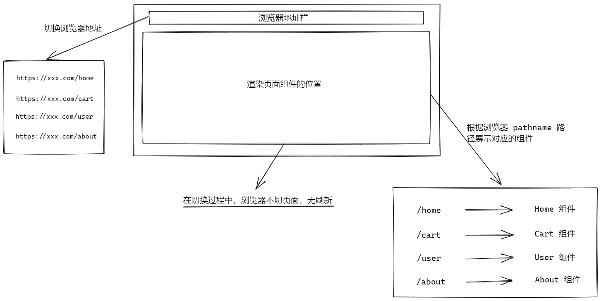

本文并非原创，而是参考了很多其他文章的内容，仅当作学习记录使用
# 什么是前端路由
用最简单的话来说就是，页面间的跳转仅由前端来控制，而不需要向后端发起请求。前端路由反映的是 URL 和 组件 之间的映射关系。

# 如何实现前端路由
vue-router 中有 3 种路由模式：hash、history、abstract（不常用），这里仅介绍下 hash 模式和 history 模式的简单实现
# hash 模式
早期的前端路由的实现就是基于 location.hash 来实现的。实现原理很简单，location.hash 的值就是 URL 中 # 后面的内容。比如下面这个网站，它的 location.hash 的值为 '#first'。
http://www.example.com#first |
hash 路由模式的实现主要基于下面几个特性：
- URL 中 hash 值只是客户端的一种状态，也就是说当向服务器端发出请求时，hash 部分并不会被发送；
- hash 值的任意改变，都会在浏览器的访问历史中增加一个记录。因此我们能通过浏览器的回退、前进按钮来控制 hash 的切换；
- 通过设置 a 标签的 href 属性，当用户点击这个标签后，URL 的 hash 值会发生改变；或者直接对 loaction.hash 进行赋值，改变 URL 的 hash 值；
- 通过浏览器原生的
hashchange事件来监听 hash 值的变化，从而对页面进行跳转（渲染）。
<ul> | |
<li><a href="#/page1">page1</a></li> | |
<li><a href="#/page2">page2</a></li> | |
</ul> | |
<!-- 渲染对应组件的地方 --> | |
<div id="route-view"></div> | |
<script type="text/javascript"> | |
// 第一次加载的时候，不会执行 hashchange 监听事件，默认执行一次 | |
// DOMContentLoaded 为浏览器 DOM 加载完成时触发 | |
window.addEventListener('DOMContentLoaded', Load) | |
window.addEventListener('hashchange', HashChange) | |
// 展示页面组件的节点 | |
var routeView = null | |
function Load() { | |
routeView = document.getElementById('route-view') | |
HashChange() | |
} | |
function HashChange() { | |
// 每次触发 hashchange 事件，通过 location.hash 拿到当前浏览器地址的 hash 值 | |
// 根据不同的路径展示不同的内容 | |
switch(location.hash) { | |
case '#/page1': | |
routeView.innerHTML = 'page1' | |
return | |
case '#/page2': | |
routeView.innerHTML = 'page2' | |
return | |
default: | |
routeView.innerHTML = 'page1' | |
return | |
} | |
} | |
</script> |
这仅是最简易的实现，真实的 hash 模式，还要考虑到很多复杂的情况，具体情况可以去看 Vue Router 的源码。
# history 模式
history 模式的实现基于 HTML5 提供的 History API，其中最主要的 API 为： history.pushState() 和 history.repalceState() 。这两个 API 均可在不刷新页面的情况下，对浏览器的历史纪录进行操作。唯一不同的是，前者是新增一个历史记录，后者是直接替换当前的历史记录。
history 路由模式的实现主要基于下面几个特性：
- 通过 pushState 和 repalceState 这两个 API 来操作实现 URL 的变化（实际上是改变了浏览器的
location.pathname属性值） ； - 通过浏览器原生的
popstate事件来监听浏览器动作的变化，从而对页面进行跳转（渲染）； - 但
history.pushState()或history.replaceState()只能改变 URL，并不会触发 popstate 事件，需要手动触发页面跳转（渲染）。
需要注意的是调用 history.pushState() 或 history.replaceState() 不会触发 popstate 事件。只有在做出浏览器动作时，才会触发该事件，如用户点击浏览器的回退按钮（或者在 Javascript 代码中调用 history.back() 或者 history.forward() 方法）（摘自 MDN 对 popstate 的解释）
<ul> | |
<li><a href="/page1">page1</a></li> | |
<li><a href="/page2">page2</a></li> | |
</ul> | |
<div id="route-view"></div> | |
<script type="text/javascript"> | |
window.addEventListener('DOMContentLoaded', Load) | |
window.addEventListener('popstate', PopChange) | |
var routeView = null | |
function Load() { | |
routeView = document.getElementById('route-view') | |
// 默认执行一次 popstate 的回调函数，匹配一次页面组件 | |
PopChange() | |
// 获取所有带 href 属性的 a 标签节点 | |
var aList = document.querySelectorAll('a[href]') | |
// 遍历 a 标签节点数组，阻止默认事件，添加点击事件回调函数 | |
aList.forEach(aNode => aNode.addEventListener('click', function(e) { | |
e.preventDefault() // 阻止 a 标签的默认事件 | |
var href = aNode.getAttribute('href') | |
// 手动修改浏览器的地址栏 | |
history.pushState(null, '', href) | |
// 通过 history.pushState 手动修改地址栏， | |
//popstate 是监听不到地址栏的变化，所以此处需要手动执行回调函数 PopChange | |
PopChange() | |
})) | |
} | |
function PopChange() { | |
console.log('location', location) | |
switch(location.pathname) { | |
case '/page1': | |
routeView.innerHTML = 'page1' | |
return | |
case '/page2': | |
routeView.innerHTML = 'page2' | |
return | |
default: | |
routeView.innerHTML = 'page1' | |
return | |
} | |
} | |
</script> |
以上代码的思路：通过遍历页面上的所有 a 标签，阻止 a 标签的默认事件的同时，加上点击事件的回调函数，在回调函数内获取 a 标签的 href 属性值，再通过 pushState 去改变浏览器的 location.pathname 属性值。然后手动执行 popstate 事件的回调函数，去匹配相应的路由。
这里注意，以上代码不能在浏览器直接打开静态文件（会报错），需要通过 web 服务，启动端口去浏览网址。
# 单页面应用 v.s. 多页面应用
对前端来说，路由概念的出现是伴随着 SPA 出现的；在 SPA 出现之前，页面的跳转 (导航) 都是通过服务端来控制的，并且页面跳转存在一个明显白屏跳转过程；SPA 出现后，用户体验好、快，内容的改变不需要重新加载整个页面，避免了不必要的跳转和重复渲染，就不再让服务端控制页面跳转了，于是前端路由出现了，前端可以自由控制组件的渲染，来模拟页面跳转。
单页面应用和多页面应用的对比如下：
| 单页面应用（SinglePage Web Application，SPA） | 多页面应用（MultiPage Application，MPA） | |
|---|---|---|
| 组成 | 一个外壳页面和多个页面片段组成 | 多个完整页面构成 |
| 资源共用（css，js） | 共用，只需在外壳部分加载 | 不共用，每个页面都需要加载 |
| 刷新方式 | 页面局部刷新或更改 | 整页刷新 |
| URL 模式 | xxx.com/#/firstxxx.com/#/second | xxx.com/#/first.htmlxxx.com/#/second.html |
| 用户体验 | 页面片段间切换快，用户体验好 | 页面切换加载缓慢，流畅度不够，用户体验较差 |
| 转场动画 | 容易实现 | 无法实现 |
| 数据传递 | 容易 | 依赖 URL 传参，或者 cookie、localStorage 等 |
| 搜索引擎优化（SEO） | 需要单独方案、实现较为困难、不利于 SEO 检索、可利用服务端渲染（SSR）优化 | 容易实现 |
| 使用范围 | 高要求的体验度、追求界面流畅的应用（一般是后台管理系统） | 适用于追求高度支持搜索引擎的应用 |
| 维护成本 | 相对容易 | 相对复杂 |
# Reference
- https://juejin.cn/post/6844903918753808398#heading-19
- https://juejin.cn/post/6917523941435113486
- https://juejin.cn/post/6844903512107663368